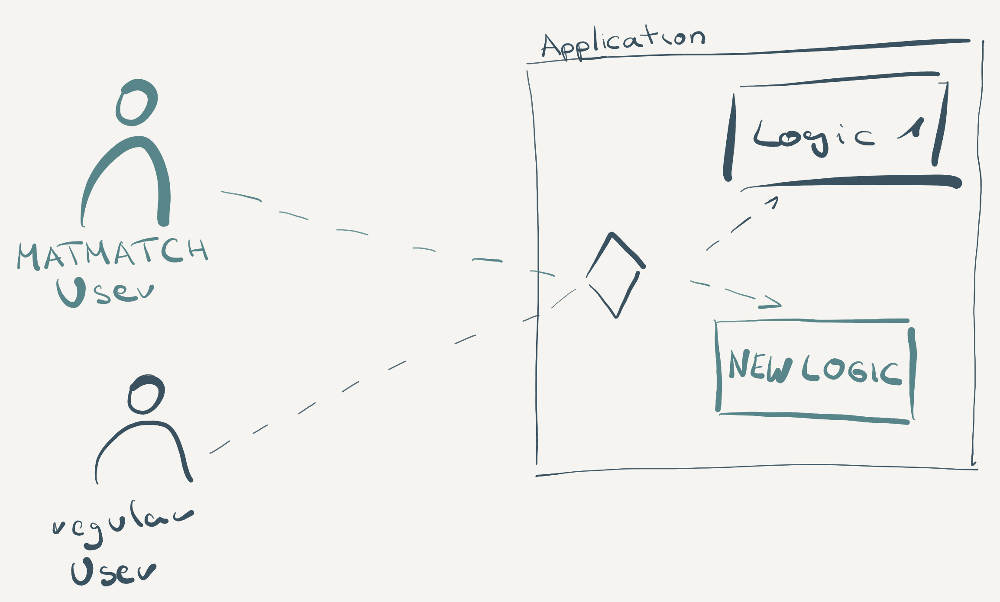

<!doctype html>
<html>
	<head>
		<meta charset="utf-8">
		<meta name="viewport" content="width=device-width, initial-scale=1.0, maximum-scale=1.0, user-scalable=no">

		<title>Continuous Delivery like you know no fear</title>

		<link rel="stylesheet" href="css/reset.css">
		<link rel="stylesheet" href="css/reveal.css">
		<link rel="stylesheet" href="css/theme/moon.css">

		<!-- Theme used for syntax highlighting of code -->
		<link rel="stylesheet" href="lib/css/monokai.css">

		<!-- Printing and PDF exports -->
		<script>
			var link = document.createElement( 'link' );
			link.rel = 'stylesheet';
			link.type = 'text/css';
			link.href = window.location.search.match( /print-pdf/gi ) ? 'css/print/pdf.css' : 'css/print/paper.css';
			document.getElementsByTagName( 'head' )[0].appendChild( link );
		</script>
	</head>
	<body>
		<div class="reveal">
			<div class="slides">

				<section data-markdown data-separator="^\n---\n$" data-separator-vertical="^\n--\n$">
					<script type="text/template">
						# Continuous Delivery
						## like you know no fear 😱

						---

						<!-- .slide: style="color:white" -->
						<!-- .slide: data-background-image="media/runway.png" -->
						<!-- .slide: data-background-position=center -->
						<!-- .slide: data-background-size=100%-->

						# The Runway Metaphor

						--

						<!-- .slide: style="color:white" -->
						<!-- .slide: data-background-video="media/bikes.mp4" -->
						<!-- .slide: data-background-position=center -->
						<!-- .slide: data-background-size=100%-->
						<!-- .slide: data-background-video-loop="loop"-->
						<!-- .slide: data-background-video-muted="muted"-->

						# The Downhill Metaphor

						--

						# Adjust quickly is a _very_ important business requirement

						--

						## big risks

						* building the wrong product
						* being too slow

						It's our duty as software professionals to get ideas out there as fast as possible*

						--

						<!-- .slide: style="color:white" -->
						<!-- .slide: data-background-image="media/feedback1.png" -->
						<!-- .slide: data-background-position=center -->
						<!-- .slide: data-background-size=100%-->

						--


						<!-- .slide: style="color:white" -->
						<!-- .slide: data-background-image="media/feedback2.png" -->
						<!-- .slide: data-background-position=center -->
						<!-- .slide: data-background-size=100%-->

						--

						## What does done mean?

						* to you
						<!-- .element: class="fragment" -->
						* to your PO
						<!-- .element: class="fragment" -->
						* to your CEO
						<!-- .element: class="fragment" -->
						* to your customer
						<!-- .element: class="fragment" -->

						--

						> Done means live and available to the customer, everything else is just an excuse

						_Me, for the lack of a better definition_


					</script>
				</section>

				<section data-markdown data-separator="^\n---\n$" data-separator-vertical="^\n--\n$">
					<script type="text/template">
						## What is continuous

						* -integration
						* -delivery
						* -deployment

						--

						<!-- .slide: style="color:white" -->
						<!-- .slide: data-background-image="media/cd1.png" -->
						<!-- .slide: data-background-position=center -->
						<!-- .slide: data-background-size=100%-->

						--

						<!-- .slide: style="color:white" -->
						<!-- .slide: data-background-image="media/cd2.png" -->
						<!-- .slide: data-background-position=center -->
						<!-- .slide: data-background-size=100%-->

						--

						<!-- .slide: style="color:white" -->
						<!-- .slide: data-background-image="media/cd3.png" -->
						<!-- .slide: data-background-position=center -->
						<!-- .slide: data-background-size=100%-->

						--

						## We deploy on Fridays

						Any do-not-deploy rule is a synonym for lack of tests, lack of trust or lack of feedback

						--

						## What to optimize for

						MTBF vs. MTTR

						--

						## Errors happen. So do bugs.

						That's when you need a tested, trained and automated way to release your fixes

						<!-- .slide: style="color:black" -->
						<!-- .slide: data-background-image="media/burn.png" -->
						<!-- .slide: data-background-position=center -->
						<!-- .slide: data-background-size=100%-->


						--

						## Delivery Performance

						| |Elite|High|Mid|Low|
						|--|--|--|--|--|
						|Freq|> 1/h|1/h - 1/d|1/w - 1/m|1/w - 1/m|
						|Lead Time|< 1h|1d - 1w|1w - 1m|1m - 6m|
						|MTTR|<1h|<1d|<1d|1w - 1m|
						|CFR|0-15%|0-15%|0-15%|46-60%|


						[DORA State of DevOps Report 2018 p14]

						--

						## Time Spent

						| |Elite|High|Mid|Low|
						|--|--|--|--|--|
						|new work|50%|50%|40%|30%|
						|rework|19,5%|20%|20%|20%|
						|security|5%|5%|5%|10%|
						|defects|10%|10%|10%|20%|
						|support|5%|10%|10%|15%|

						[DORA State of DevOps Report 2018 p32]
					</script>
				</section>

				<section data-markdown data-separator="^\n---\n$" data-separator-vertical="^\n--\n$">
					<script type="text/template">
						## DEMO
					</script>
				</section>

				<section data-markdown data-separator="^\n---\n$" data-separator-vertical="^\n--\n$">
					<script type="text/template">
					## The Matmatch Path to CD

					--


					## The Matmatch Path to CD

					1. Fix Deployment Automation
					1. Fix Testing
					<!-- .element: class="fragment" -->
					1. Fix Review Process
					<!-- .element: class="fragment" -->
					1. Fix Observability
					<!-- .element: class="fragment" -->
					1. Fix Release Process
					<!-- .element: class="fragment" -->
					1. Fix Fear
					<!-- .element: class="fragment" -->

					--

					## Getting there

					```
						make deploy production
					```

					--

					## Getting there

					### Fix Testing

					Separate our tests into different build steps for quicker feedback

					

					--

					## Getting there

					### Fix Testing

					Speed up the build -> Build on big ec2 spot instances

					(We went from TravisCI over AWS CodeBuild to Gitlab Runners)

					--

					## Getting there

					### Fix the review process

					

					--

					## Getting there

					### Fix our Environment

					Dependable releases need dependable infrastructure

					

					--

					## Getting there

					### Observability of the System

					Get good metrics and feed them into good tools

					
					
					

					--

					## Getting there

					### Cops of the Day

					Increase operational knowledge in the team:

					Random pair of developers run the "morning checklist"

					--

					## Getting there

					### Chatops

					Be involved in the system behavior - convert important business events to chat messages

					

					--

					## Getting there

					### Fix Release Process

					--

					## Getting there

					### Rolling Releases

					

					--

					## Getting there

					### Dark Releases

					

					--

					## Getting there

					### Rights based Releases

					

					--

					## Getting there

					### Limit Fear: Small Releases

					

					--

					## Getting there

					### Limit Fear: Make it Boring

					1. Automate everything until the "Deploy" button (Continuous Delivery)
					<!-- .element: class="fragment" -->
					2. Make pushing the button a boring non-event
					<!-- .element: class="fragment" -->
					3. Remove the button, no one cares
					<!-- .element: class="fragment" -->

					</script>
				</section>


				<section data-markdown data-separator="^\n---\n$" data-separator-vertical="^\n--\n$">
					<script type="text/template">
						## Issues we faced

						--

						## Issues we faced

						* K8S: Health and readiness endpoints
						* K8S: Pod limits
						<!-- .element: class="fragment" -->
						* K8S overload: Rebuild everything from scratch
						<!-- .element: class="fragment" -->
						* Dependencies between services (stateful set by accident)
						<!-- .element: class="fragment" -->

						=> Architectural and ops problems bite you twice as fast
						<!-- .element: class="fragment" -->
						=> But you notice them before they hit production
						<!-- .element: class="fragment" -->


					</script>
				</section>


				<section data-markdown data-separator="^\n---\n$" data-separator-vertical="^\n--\n$">
					<script type="text/template">
						## Summary

						* We are faster than before
						* We have less defects and issues than before
						* We have a ❤️ for production

						5,25 humans => up to 15 releases / day 🔥

						--

						## Key Takeaways

						* Continuous Deployment pays off big time
						<!-- .element: class="fragment" -->
						* Slow and steady wins the race to get there
						<!-- .element: class="fragment" -->
						* It's not just tech, it's also emotions
						<!-- .element: class="fragment" -->
						* Don't play too much with your K8S prod cluster
						<!-- .element: class="fragment" -->
						* Most things you have to fix for CD are things that help you a lot in general
						<!-- .element: class="fragment" -->

						--

						## Suggested Readings

						* [Continuous Delivery, Jez Humble](https://www.amazon.de/Continuous-Delivery-Deployment-Automation-Addison-Wesley/dp/0321601912/)
						* [Accelerate, Nicole Forsgren Phd ](https://www.amazon.de/Accelerate-Software-Performing-Technology-Organizations/dp/1942788339/)
						* [Release It, Michael Nygard ](https://www.amazon.de/Release-Design-Deploy-Production-Ready-Software/dp/1680502395/)
						* [The Phoenix Project, Gene Kim](https://www.amazon.de/Phoenix-Project-DevOps-Helping-Business/dp/1942788290/)


						--

						## Questions?

						My twitter is [@chrisuhl](https://twitter.com/chrisuhl)

						Examples, slides and everything else [on github: https://github.com/christianuhlcc/cd-like-you-mean-it](https://github.com/christianuhlcc/cd-like-you-mean-it)
					</script>
				</section>
			</div>
		</div>

		<script src="js/reveal.js"></script>

		<script>
			// More info about config & dependencies:
			// - https://github.com/hakimel/reveal.js#configuration
			// - https://github.com/hakimel/reveal.js#dependencies
			Reveal.initialize({
				dependencies: [
					{ src: 'plugin/markdown/marked.js' },
					{ src: 'plugin/markdown/markdown.js' },
					{ src: 'plugin/notes/notes.js', async: true },
					{ src: 'plugin/highlight/highlight.js', async: true }
				]
			});
		</script>
	</body>
</html>
